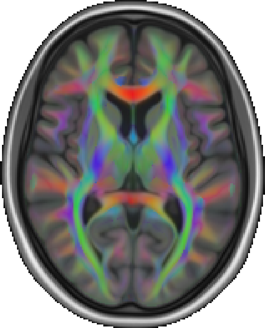
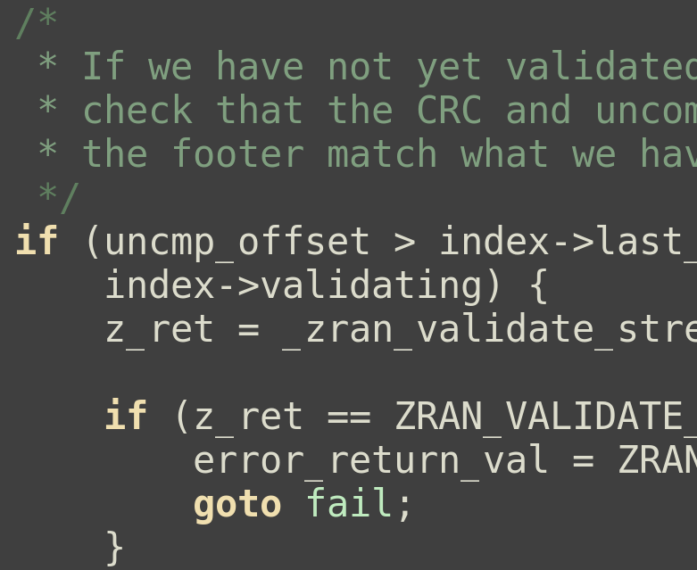
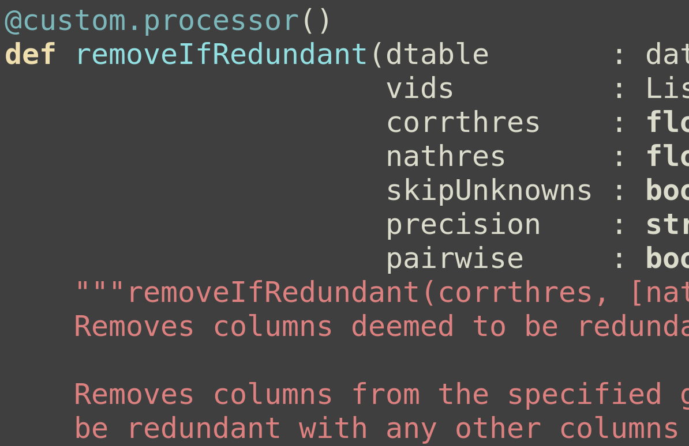
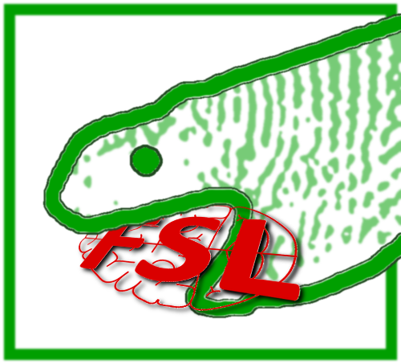

{kind=link}
{kind=link}
{kind=link}
{kind=link}
{kind=link}

My current position involves software development, management, and maintenance on a range of projects related to FSL, the FMRIB Software Library.
Some of my software contributions to FMRIB and FSL have been:
FSLeyes - an interactive OpenGL-based desktop application for visualisation of 3D and 4D MRI data, written in Python.
The FSL build system - an automated modular build system for FSL, based on the conda environment and package manager, inspired by the conda-forge package ecosystem, and making extensive use of GitLab CI and Amazon AWS. As part of this work I also added support for building FSL on Apple Silicon, and made substantial improvements to the build processes for our C++/CUDA applications to achieve compatibilty across a wide range of GPU hardware

MMORF - a CUDA-accelerated C++ application
for non-linear registration of MRI images, designed and developed by
my colleague Frederik Lange. I ported the
codebase to pure C++, using the std::thread library for
parallelism, in order to allow MMORF to be used on a wider range of
platforms, and to take advantage of lower cost cloud-based compute
instances when running at scale.

indexed_gzip - a Python library for fast
random access of gzip files, written in C and Cython.

FUNPACK, a Python-based command-line application for working with very large CSV files from the UK Biobank.

pyfeeds, a bespoke testing framework used
to run our internal suite of integration tests, which supports custom
evaluation rules, and can execute tests in parallel on a HPC cluster.
I have played an active role in the conda-forge package ecosystem, having used conda-forge to
publish my own software, and being added to the maintainence team for
a number of other packages, such as wxwidgets, wxPython, and libxml++.
I have also played an active role in my workplace in teaching, public engagement, and generally helping out where I can:
In 2023 I organised and led an effort to migrate the FSL documentation
from an old Wiki framework (MoinMoin) to a
markdown-based framework (Docsify). I organised
a "docathlon" to solicit help from colleagues
in porting the old documentation over to the new site, which also doubled as a git training workshop for the
participants.
I have volunteered for a range of public engagement activities; for example, for the past two years I have ran an "MRI analysis bootcamp" for high-school students interested in pursuing scientific studies at University.
When my boss led the resignation of the NeuroImage editorial board in 2023, I did the grunt work behind the scenes to set up an interim journal submission system (based on Janeway) for the new Imaging Neuroscience journal. This ran successfully for several months until MIT Press took over management.
I have taught on, and developed large portions of the materials for our internal "PyTreat", a series of internal Python-based hackathon events, intended to help researchers in getting started with the Python programming language.
I have held lecturing and tutoring roles on our internal MRI Graduate Programme, held annually for the benefit of Oxford-based researchers and PhD students.
I have lectured and tutored on the FSL course, an international course held annually, which teaches MRI analysis using FSL.
I have been fortunate enough to be listed as a co-author for my technical contributions to a range of academic studies, including:
Go Figure: Transparency in neuroscience images preserves context and clarifies interpretation Taylor et. al. Arxiv [Preprint] 2025 10.48550/arXiv.2504.07824
MMORF—FSL's MultiMOdal Registration Framework Lange et. al. Imaging Neuroscience 2024 10.1162/imag_a_00100
The mouse motor system contains multiple premotor areas and partially follows human organizational principles Lazari et. al. Cell Reports 2024 10.1016/j.celrep.2024.114191
The effects of genetic and modifiable risk factors on brain regions vulnerable to ageing and disease Manuello et. al. Nature Communications 2024 10.1038/s41467-024-46344-2
SARS-CoV-2 is associated with changes in brain structure in UK Biobank Douaud et. al. Nature 2022 10.1038/s41586-022-04569-5
Image processing and Quality Control for the first 10,000 brain imaging datasets from UK Biobank Alfaro-Almagro et. al. Neuroimage 2018 10.1016/j.neuroimage.2017.10.034
My PhD revolved around the application of graph theory techinques to fMRI data, to explore how functional connectivity changes with age and the presence of Alzheimer’s disease. Part of my PhD work was published in an academic journal:
The age-related posterior-anterior shift as revealed by voxelwise analysis of functional brain networks McCarthy et. al. Frontiers in Aging neuroscience 2014 10.3389/fnagi.2014.00301
Most of the code which formed the basis for my analyses was written as
part of a package I developed called ccnet,
written in C.
Before migrating my code to C, I used the first 12 months of my PhD as an opportunity to teach myself Haskell, but then decided to port all of my code to C for more fine-grained control over performance and memory usage
I worked as the primary software engineer in the deployment of three wireless sensor networks in Tasmania, including:
a relatively large scale network (70 nodes) deployed for real time monitoring of soil moisture in a farm environment;
a multi-hop underwater sensor network, using acoustic modems for inter-node communication, and a 3G modem for internet uplink
and a prototype low cost marine wireless sensor node, for deployment in salmon hatcheries.
I played leading roles in each of these projects, working on hardware/ electronic design and construction, low level system programming and routing protocols in C, and data transmission, storage, and real time data presentation via a dedicated website, using Java.
As part of another project, I worked on the development of a platform-agnostic operating system written primarily in C, for low powered wireless devices with 8-bit microcontrollers. I worked on the design and development of system and device drivers, including work on a bootloader with wireless capabilities, for remote reprogramming.
Before leaving CSIRO to begin my PhD, I worked as the lead developer on a MATLAB toolbox for the processing of marine moorings data, with the aim of providing a standard output format for data to be hosted by the Integrated Marine Observing System (IMOS). I am quite proud of the fact that the project is still actively used and developed - it can be found at https://github.com/aodn/imos-toolbox/
A mixture of software development, maintenance, and experimentation. My first project involved the development of a multi-agent system for crowd behaviour simulation during panic situations. This entailed the implementation (in Java) of the Helbing particle physics model, which is a prevalent crowd simulation model. In another project, I developed a dynamic social network simulation program, also in Java, which provided visualisation of social network simulations, and exporting in graph or tabular form of simulation data.
I completed a Bachelor of Computer Science with First Class Honours (GPA 6.5), and used credit from my Honours degree to progress to a Masters degree. My Masters thesis involved an exploration into different methods of acquiring data from mobile phones, and the issues involved in presenting this data as forensic evidence.
Most of my free time is spent in the outdoors or at the climbing wall. I have spent much of my adult life suffering from an addiction to rock climbing and, since moving to North Wales in 2018, have also developed an affinity for fell running and scrambling. I also enjoy mountain biking, surfing, and snowboarding when conditions and time allow. I occasionally post photos and trip reports at https://pauldmccarthy.github.io/.
I am a keen but mediocre guitarist, and also enjoy board games, chess, reading novels, and very occasionally hacking on hobby coding projects that usually lead nowhere.
{kind=link}